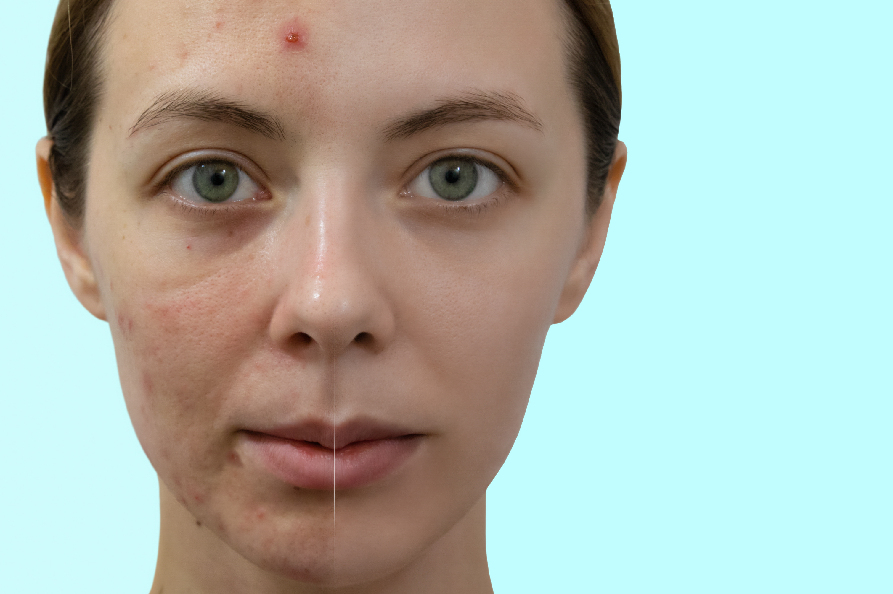
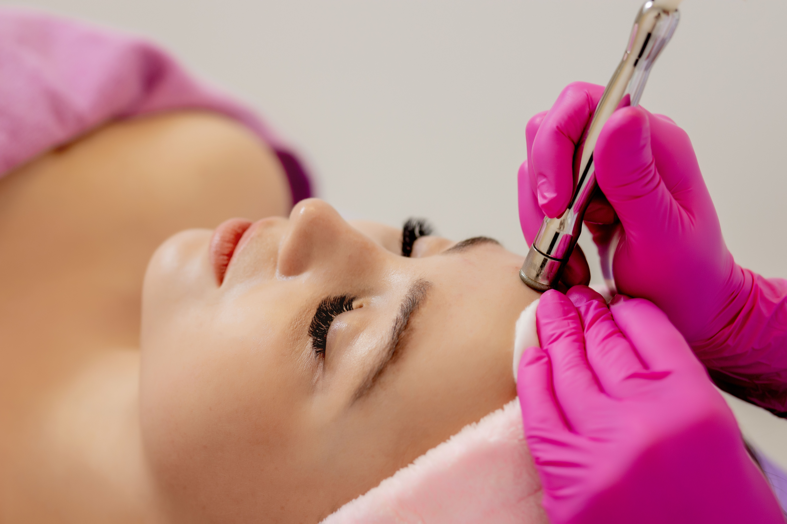

Serviços de estética profissional
Qual o seu objetivo? Conheça nossos tratamentos estéticos abaixo e escolha o que melhor para você!
Tratamentos Faciais
Muito além da busca pela beleza, é importante dar atenção à saúde desta região tão delicada. Homens e mulheres buscam cada vez mais tratamentos faciais, que vão da prevenção à acne ao tão desejado rejuvenescimento. Todos sabemos que manter a pele limpa é essencial para a saúde, mas existem outros fatores que prejudicam a vitalidade do rosto.
Estresse, fumo, excesso de sol e alterações hormonais são algumas das causas que interferem negativamente no processo de renovação celular. Eles ajudam na produção de radicais livres que comprometem a hidratação cutânea e podem causar alterações indesejáveis. Abaixo, conheça mais sobre os tratamentos faciais que oferecemos.
Tratamento de manchas

Limpeza Facial
Tratamento de manchas

Tratamento para rejuvenescimento
Tratamentos Corporais
Nosso corpo é essencial para o desempenho das atividades cotidianas, e os cuidados que devemos ter são diversos, inclusive com a autoestima. Por isso, na Onodera Estética, acreditamos que saúde e bem-estar caminham juntos.
Oferecemos tratamentos corporais desde cuidados pós-operatórios a massagens relaxantes. Cada tratamento possui uma finalidade específica, mas todos colaboram significativamente para uma melhora estética e da saúde dermatológica. Dentre tantas especialidades, cuidamos de celulite, depilação, estrias, flacidez, gordura localizada, manchas de pele e pós-operatório. Em todos os nossos métodos, aplicamos a inovação, atendendo às necessidades de cada paciente e alcançando os melhores resultados.
Sobre
Lestética é uma clina de estética.....
Fale Conosco
Gostou de todos os tratamentos oferecidos? Então entre em contato ainda hoje através do whatsapp: (11)90000.0000.
Nosso horário de funcionamento é de: Seg - Sex: 08h - 20hSáb: 08h - 14h
Localização
Estamos localizados na Rua Manuel de Andrade Furtado, 54